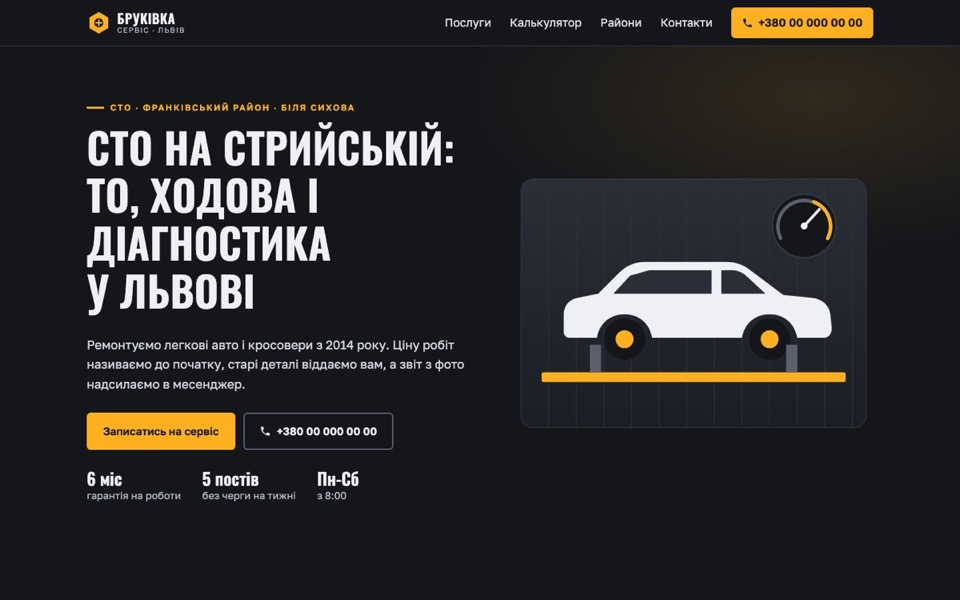
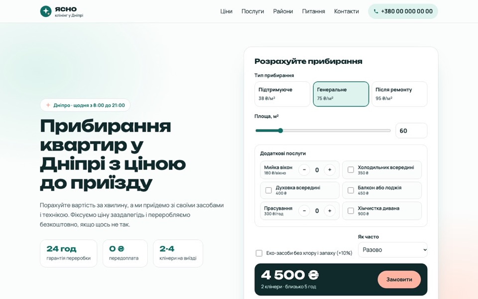
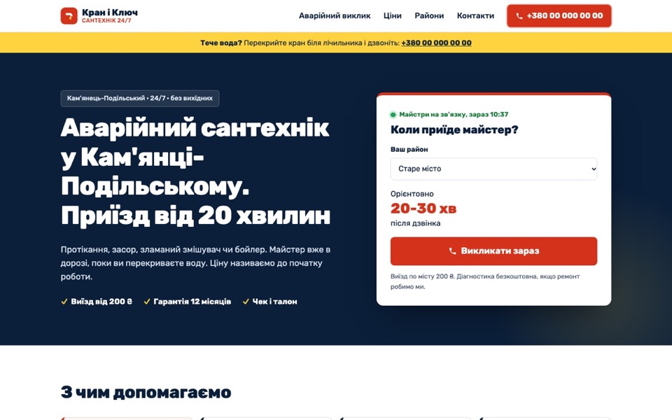
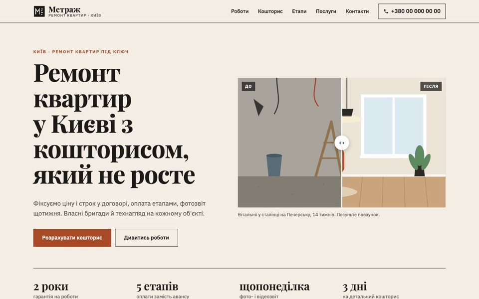
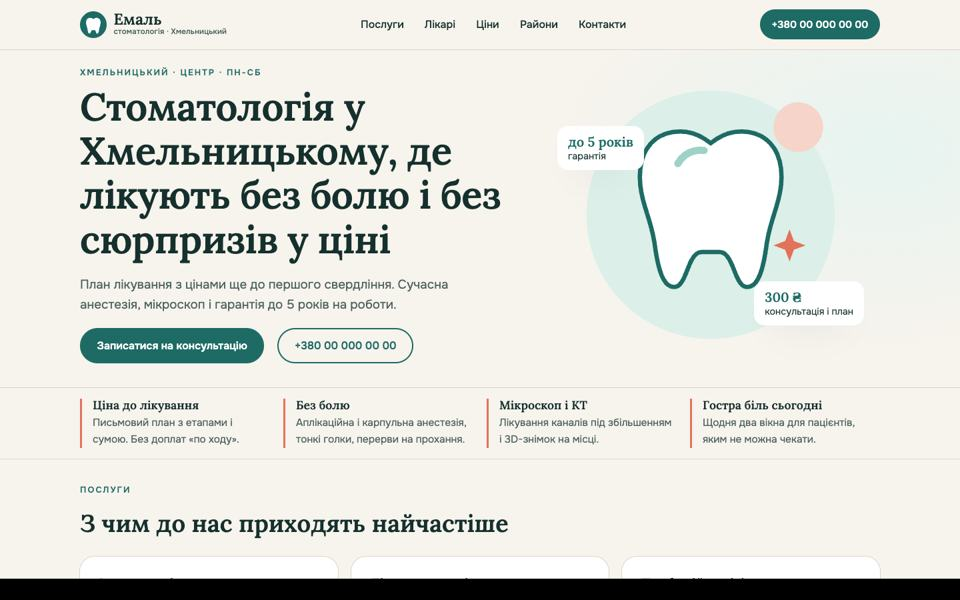

ДК Дмитро Козін · веброзробка й автоматизація
Сайти для локального бізнесу
П'ять демо-проєктів для сервісних бізнесів у різних містах України: СТО, клінінг, аварійний сантехнік, ремонт квартир і стоматологія. Кожен зібраний під локальний пошук і дзвінки з телефону: сторінки послуг і районів, калькулятори, розмітка LocalBusiness, швидке завантаження.
Чесно про проєкти. Усі п'ять бізнесів вигадані: це навчальні демо-концепти для портфоліо, без реальних клієнтів. Телефони й адреси фіктивні, сайти закриті від індексації.
Роботи Що є на кожному сайті Результати перевірки Код на GitHub LinkedIn
Роботи

СТО · Львів · статичний сайт
«Бруківка Сервіс»: автосервіс із калькулятором ТО
Завдання: сайт для незалежної СТО, щоб водії бачили ціну робіт до приїзду і записувались онлайн.
Калькулятор: клас авто × набір робіт, готові пакети, час на підйомнику, передача розрахунку у форму запису
3 сторінки послуг, 2 сторінки районів (Сихів, Левандівка) з маршрутами і локальними деталями
AutoRepair JSON-LD, FAQPage, BreadcrumbList, блок під відгуки з Google-профілю
HTML CSS Vanilla JS Python-генератор 7 сторінок

Клінінг · Дніпро · статичний сайт
«Ясно Клінінг»: ціна прибирання на першому екрані
Завдання: клієнт хоче знати ціну одразу, тому калькулятор винесений у перший екран.
Калькулятор: площа, тип прибирання, додаткові послуги з лічильниками, еко-засоби, регулярність зі знижкою, склад бригади й тривалість
Чек-лист у вкладках з клавіатурною навігацією, 6 питань FAQ з розміткою FAQPage
Сторінки районів: Соборний і Лівий берег з особливостями забудови
HTML CSS Vanilla JS ARIA tabs 7 сторінок

Сантехнік · Кам'янець-Подільський · статичний сайт
«Кран і Ключ»: аварійний виклик за один дотик
Завдання: людина з протіканням має подзвонити за 5 секунд, а не читати сайт.
Кнопка дзвінка в шапці, у першому екрані і закріплена знизу на телефоні; жовта смуга «що робити зараз»
Віджет «Коли приїде майстер»: район → час приїзду, нічний тариф за поточним часом
Прайс з пошуком, сторінки Старого міста і Нового плану з реальною специфікою забудови
HTML CSS Vanilla JS Plumber schema 8 сторінок

Ремонт квартир · Київ · статичний сайт
«Метраж»: кейси до/після і кошторис зі строком
Завдання: показати результат робіт і дати чесний орієнтир по бюджету і термінах.
Порівняння «до/після» з повзунком, доступне з клавіатури, ілюстрації в SVG без важких фото
Калькулятор: площа, тип ремонту, житло, санвузли → вартість робіт, матеріалів, строк і розподіл по етапах
Сторінка кейсів з задачею, рішенням, площею, строком і бюджетом; райони Оболонь і Позняки
HTML CSS Vanilla JS SVG 8 сторінок

Стоматологія · Хмельницький · WordPress
«Емаль»: блокова тема WordPress без Elementor
Завдання: сайт клініки, який адміністратор може редагувати сам, але без важкого конструктора.
FSE-тема: theme.json, шаблони, 21 патерн, локальні шрифти, жодного плагіна
11 сторінок: послуги, лікарі, ціни, райони, контакти з формою запису; дані клініки в одному PHP-файлі
Dentist JSON-LD, BreadcrumbList, FAQPage з тих самих даних, що й блоки FAQ; title і description без SEO-плагіна
WordPress FSE theme.json PHP Block patterns Playground
Що є на кожному сайті
Сторінки послуг і районів Окрема сторінка під кожен запит «послуга + місто/район», з унікальним текстом, а не заміною назви. LocalBusiness-розмітка Підтип бізнесу, адреса, графік, areaServed, BreadcrumbList і FAQPage. Однаковий NAP Назва, адреса, телефон збігаються в шапці, футері й розмітці, як у Google-профілі. Дзвінок з телефону Закріплена кнопка дзвінка внизу екрана на мобільному, tel:-посилання всюди. Форма заявки Перевірка полів, зрозумілі помилки, стан успіху. У демо нікуди не відправляє. Швидкість Без фреймворків і конструкторів: SVG замість фото, мінімум JS, шрифти з display=swap. Доступність Контраст, видимий фокус, skip-link, aria для меню, вкладок і живих підсумків калькулятора. Технічне SEO Унікальні title і description, canonical, Open Graph, sitemap.xml, robots.txt. Окремий стиль Своя палітра, шрифти й композиція під кожну нішу, без спільного шаблону.
Як я працюю над таким сайтом
Розбір ніші Що шукають клієнти, які запити по районах, що змушує подзвонити. Структура Карта сторінок під послуги й локації, перелінковка, розмітка. Тексти й інструменти Живі тексти без «води», калькулятор або віджет під головне питання клієнта. Верстка Мобільна версія першою, потім десктоп. Перевірка на 375 і 1440 px. Перевірка Lighthouse, валідність розмітки, клавіатурна навігація, швидкість.
Результати перевірки Lighthouse
Lighthouse 12, мобільний профіль (повільний 4G, слабкий процесор), головні сторінки. *Єдиний пункт SEO, що не проходить: «сторінка закрита від індексації». Це навмисно, бо бізнеси вигадані; без noindex SEO-оцінка 100. На кожному сайті FCP 1,2-1,7 с, LCP 1,4-2,0 с, CLS 0, блокування потоку 0 мс.